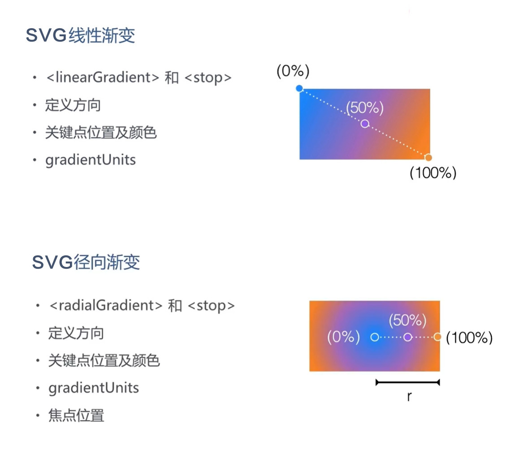

SVG渐变色
渐变色(gradient)是指从一种颜色平滑的过渡到另外一种颜色。而且，我们可以将多种渐变色应用到同一个网页元素上。在SVG里，有两种主要的渐变色类型：
SVG线性渐变色 – <linearGradient>
<linearGradient>标记就是用来定义渐变色的。
<linearGradient>标记必须放在<defs>标记内。<defs>标记就是“definitions”单词的简写，用来容纳其它各种SVG标记。
线性渐变色可以定义成水平渐变色，垂直渐变色和斜向渐变色：
SVG径向渐变色 – <radialGradient>
<radialGradient>标记用来定义一个辐射式渐变色。
<radialGradient>标记必须放置在
线性渐变色可以定义成水平渐变色，垂直渐变色和斜向渐变色：